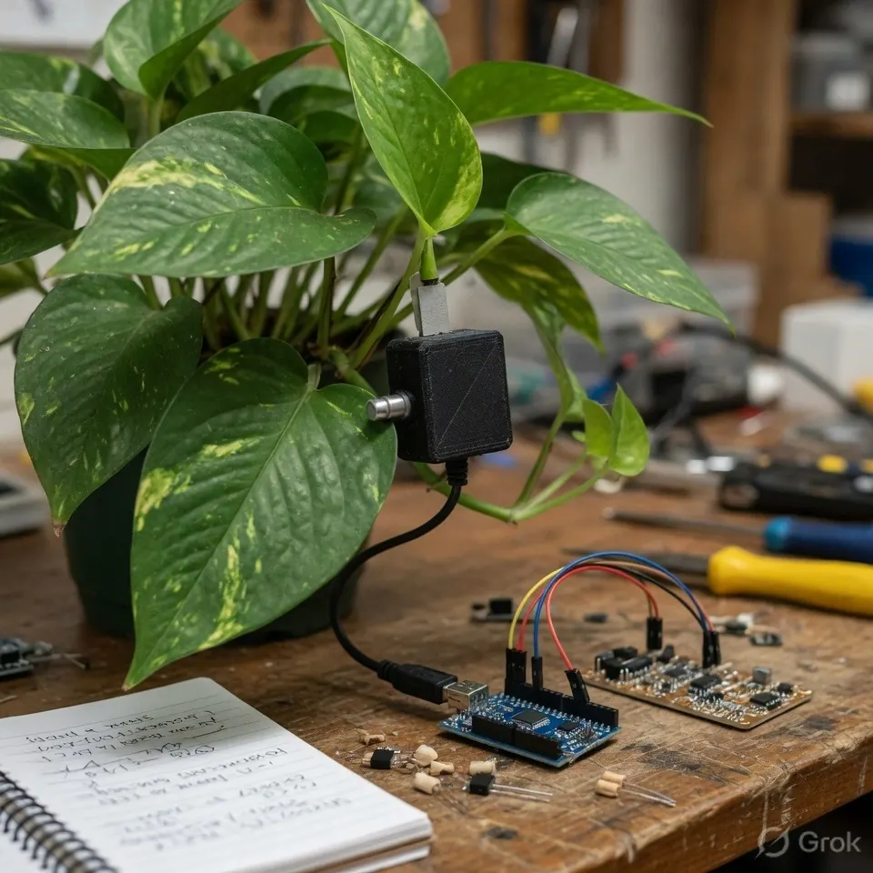
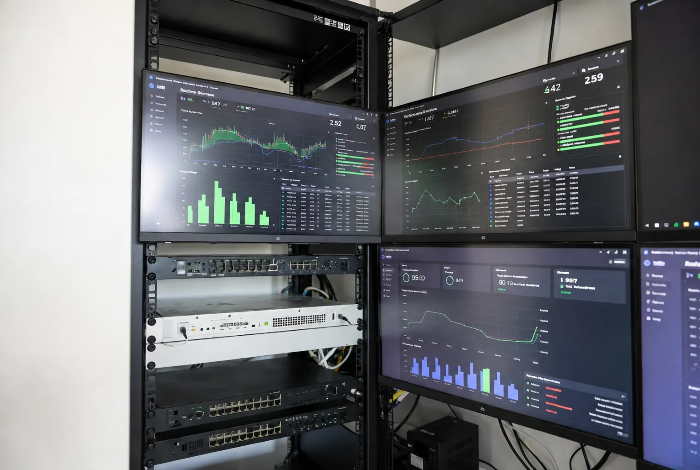
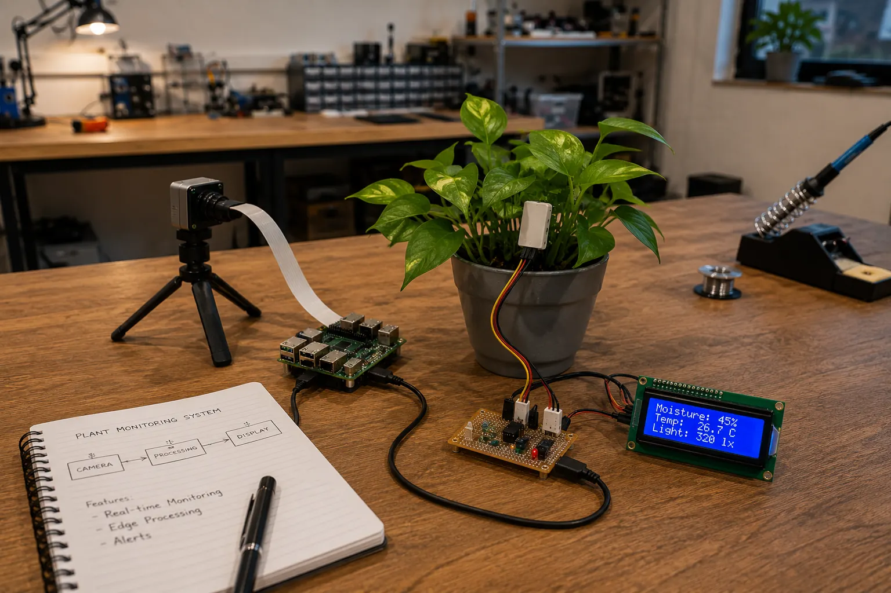

Engineering-first technology development.
Vortiq Dynamics helps businesses transform ideas into reliable technology systems, from connected devices to cloud platforms and intelligent applications.
Build the architecture before the noise.
We approach every project as a system: hardware, firmware, data, cloud, interface, users, deployment, and long-term support all need to work together.
- End-to-end development
- Engineering-first approach
- Scalable architecture
- Support from concept to deployment


Connected intelligence for smarter operations.
Unlock the power of connected intelligence with smart IoT solutions that transform everyday devices into valuable business assets. Monitor operations in real time, automate critical processes, and gain instant visibility into your systems through secure, scalable, and data-driven technologies.
From smart sensors and connected equipment to cloud-enabled monitoring platforms, we help businesses improve efficiency, reduce downtime, optimize performance, and make faster decisions with actionable insights. Build a smarter, more connected future with intelligent IoT innovation.
Speed, scale, and reliability in the cloud.
Power your business with cloud solutions that deliver speed, scalability, and reliability. Modernize your operations with secure cloud infrastructure, seamless connectivity, and high-performance platforms that enable teams to collaborate, innovate, and grow without limitations.
From cloud migration and application hosting to APIs, containerized environments, and automated deployments, we build resilient cloud ecosystems designed for efficiency and future expansion. Unlock greater agility, enhanced security, and smarter business operations with cloud technology built to scale.


Intelligence closer to where data is created.
Bring intelligence closer to where data is created with Edge AI solutions that deliver real-time insights, faster decision-making, and reduced latency. By processing data directly on devices, systems can respond instantly without relying entirely on cloud connectivity, improving performance, reliability, and efficiency.
From smart monitoring and computer vision to predictive analytics and intelligent automation, our Edge AI solutions transform devices into powerful decision-making systems. Unlock faster responses, enhanced privacy, and smarter operations with AI designed to work at the edge.